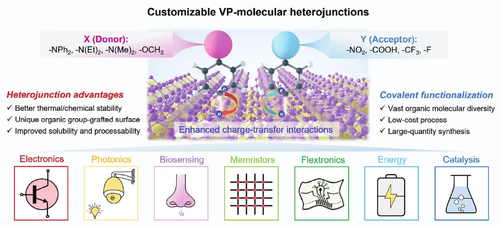
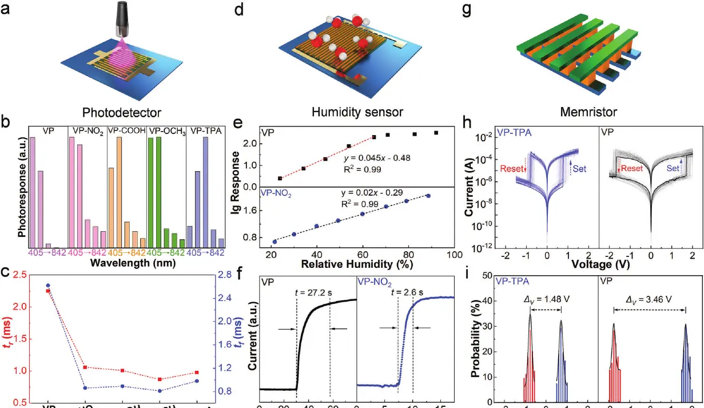

二维原子—分子异质结：可调电荷转移与能带结构
研究在二维紫磷表面共价接枝不同给电子与受电子有机分子，构建可定制的原子—分子异质结，并从分子电负性出发调控接枝效率、电荷转移和能带结构。
8 种给电子/受电子异质结
14 倍最高响应度提升
3 类器件光探测、湿度传感、忆阻
以分子电负性调控界面电荷转移与能带
采用芳基重氮盐功能化方法，在紫磷表面形成稳定的 C—P 共价键。四种给电子分子与四种受电子分子分别构成 VP-Donor 和 VP-Acceptor 异质结。有机分子的电负性决定接枝效率和界面电荷重分布：受电子分子表现出更高的接枝效率，而给电子分子对紫磷带隙的缩窄更明显，从而实现分子尺度的能带定制。

从界面调控延伸到光探测、湿度传感与忆阻器件
共价功能化后的紫磷异质结在不同器件中呈现差异化优势。光探测器的响应波段扩展至 660–842 nm，VP-OCH₃ 器件的最高响应度达到 72.8 mA·W⁻¹；VP-NO₂ 湿度传感器在 20%–90% 相对湿度范围内保持线性响应，并将响应时间缩短至 2.6 s；VP-TPA 忆阻器则表现出更窄且更稳定的双极性开关电压窗口。

论文来源
Customization of 2D Atomic-Molecular Heterojunction with Manipulatable Charge-Transfer and Band Structure
Weilin Chen, An Chen, Xue Liu, Fan Shu, Jianmin Zeng, Jinying Zhang, Hongbo Xu, Gaoliang Peng, Zhi Yang, Jinjin Li, Gang Liu
Advanced Materials 36 (2024), 2410097
DOI：10.1002/adma.202410097AMBIC LaboratorySUN YAT-SEN UNIVERSITY